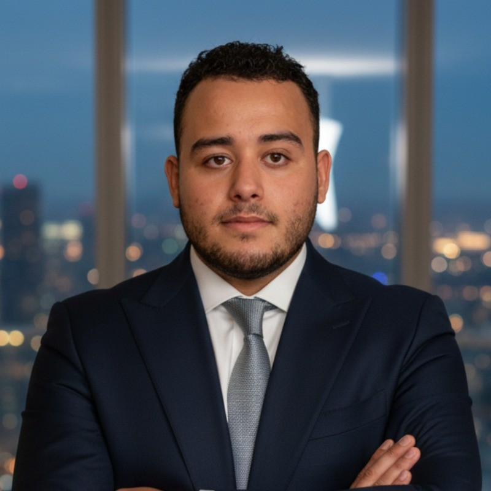

Technicien Support IT · Helpdesk · Support TPV/POS

Technicien IT titulaire d'un diplôme supérieur en développement d'applications web, avec une expérience professionnelle en développement Full-Stack et en support technique de systèmes TPV/POS.
Mon parcours combine la compréhension des applications web avec une expérience pratique du hardware, des systèmes d'exploitation, des périphériques, des réseaux de base et du support de clients francophones. Je recherche un poste de Technicien Support IT / Helpdesk en Suisse.
Je suis à la recherche d'une opportunité en support IT / helpdesk en Suisse et disponible immédiatement.